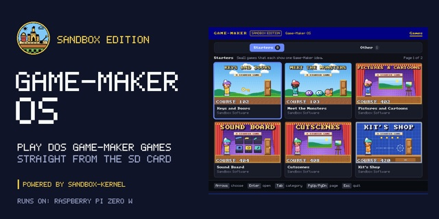

Game-Maker OS
DOS Game-Maker games from the SD card, on a Pi Zero W

An operating system that turns a Raspberry Pi Zero W into a Game-Maker machine: it boots to a library of games on a TV and plays their original DOS files straight from the SD card.
Executive summary
Why it exists
I wanted my Game-Maker games to run on their own small machine you plug into a TV, with no PC, browser or desktop in between. Game-Maker: Sandbox Edition already plays them in a browser, so the next step was an operating system whose only job is the games.
Outcome
On a Pi Zero W the library lists games, plays them from their DOS files with the arrow keys, Space and Enter, and keeps saves and high scores. Roll the Dice and five more Starters draw the same frames as the host tests. Input comes from the development computer over USB for now, and the e-ink status, a gamepad and a TV remote are still ahead.
My role
Designer, director and maintainer. Built with AI coding assistance from Claude (Opus 5.5 and Sonnet 5.5) plus reviews by an agent on my Linux machine. The art, including the boot art and social preview, was made with ChatGPT GPT-6.1 Sol from my directions, and Game-Maker OS's background tune was composed in code by Claude.
Technical overview
How it works
A program in C that sandbox-kernel loads from the SD card on a Raspberry Pi Zero W. It shows a castle boot splash, then a game library on HDMI with category tabs, cards with each game's title screen read from its own files, and a details page. Play runs the game from its original DOS files with the same play core as the Pocket Player in Game-Maker: Sandbox Edition, shared rather than copied by hand. Leave a game on its details page for 3 seconds and its demo plays in the picture. Saves and high scores live on the card, with a Top Ten like PLAYGAME's. A separate experimental JS.ELF runs small JavaScript apps with QuickJS-ng; it is a spike, not the main program.
Hard parts
The Zero W has little memory and no operating system underneath, so the library, the game player and the card reader all have to be small and careful. I kept PLAYGAME's behavior, so a game draws the same frames tick for tick as the host tests do, and a saved score survives power loss. The e-ink status screens are drawn but not wired in yet, and sound is still being worked on.
How it was made
The program, its tests and its documentation were written with Claude Code and reviewed by an agent on my Linux machine. The boot art and social preview came from ChatGPT GPT-6.1 Sol and my directions. The library's background tune was composed in code by Claude.